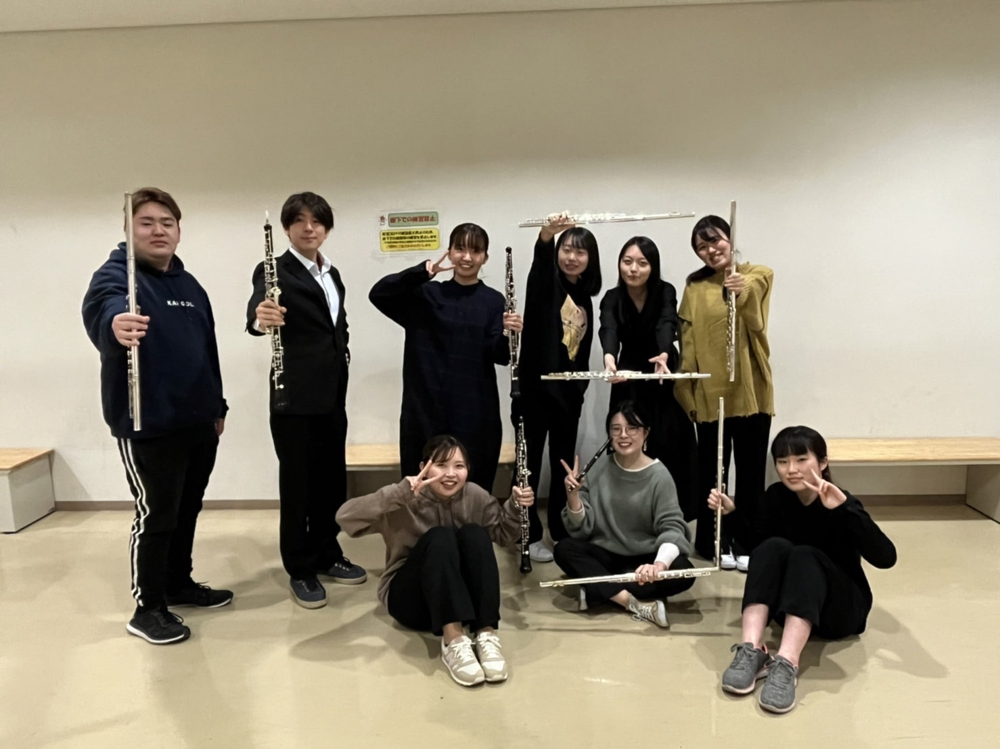
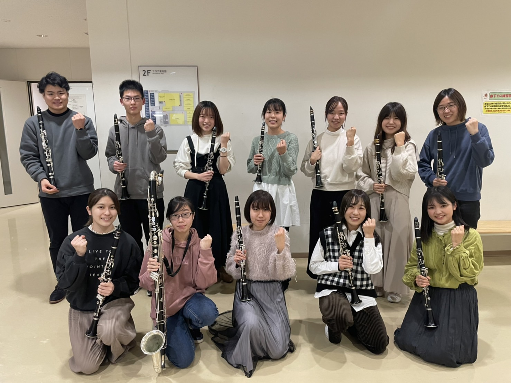
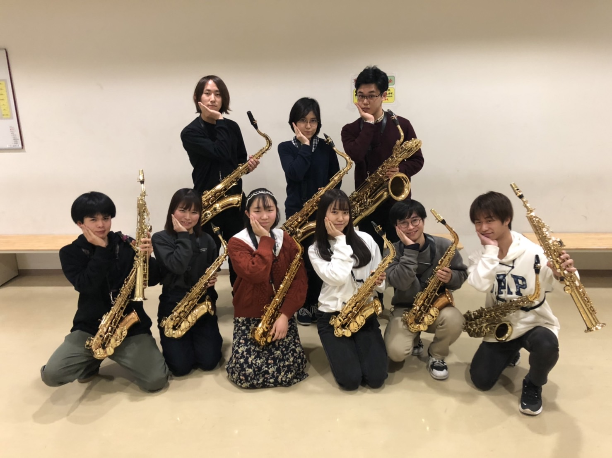
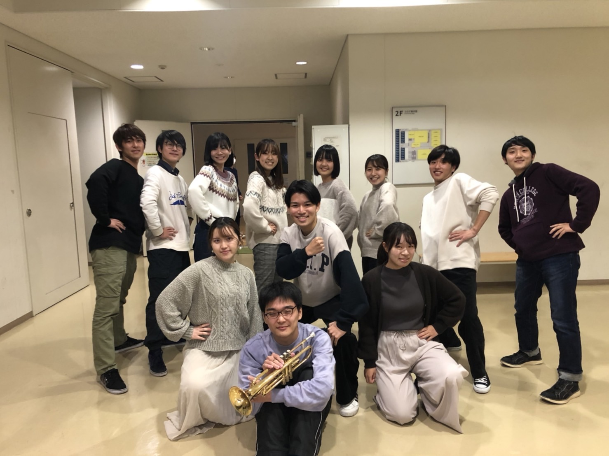
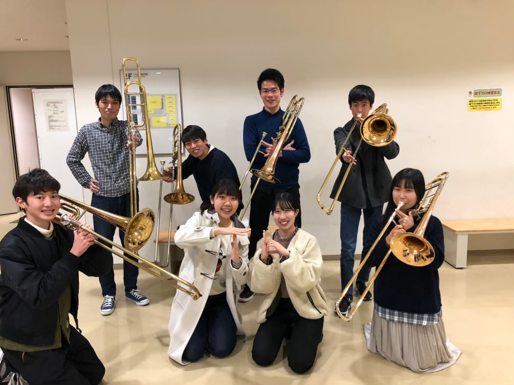
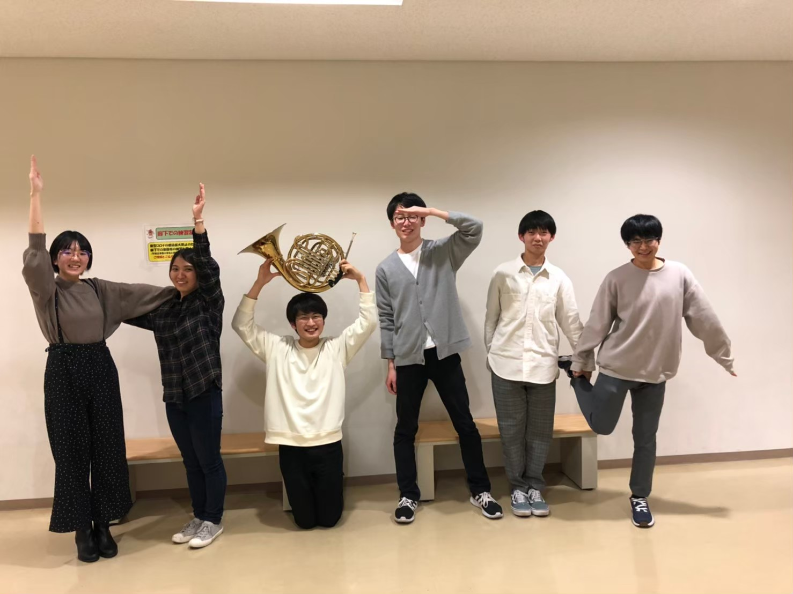
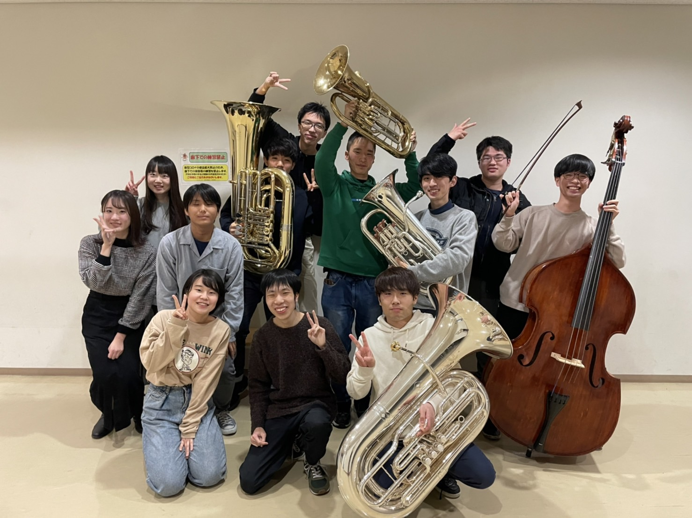
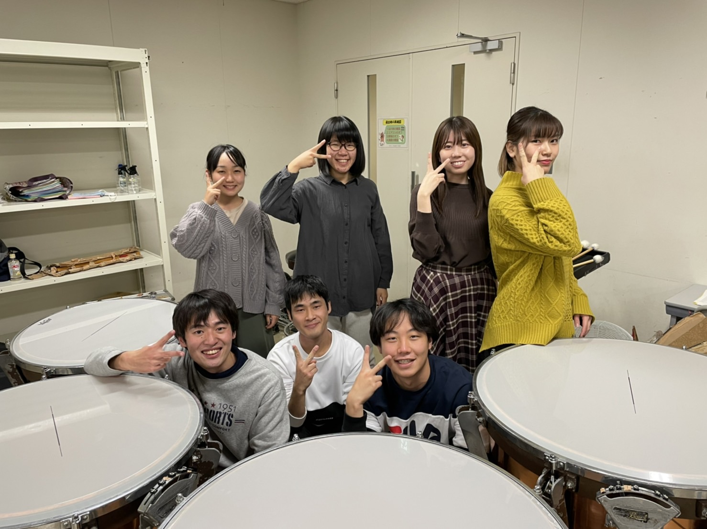

Menu
Home
About
Members
Community
Contact
メンバー紹介
指揮者
フルート・特木
クラリネット
サックス
トランペット
トロンボーン
ホルン
低音
パーカッション
指揮者
正指揮者 左
いい演奏をすると、目が合いニコニコする。
ユーモアにあふれ、毎回の合奏には小ネタを欠かさない。
副指揮者 右
表現豊かな指揮で演奏者を導く。
どんな難曲も彼女の手にかかればなんのその！
フルート・特木

プリティでチャーミングなイデタチ♡
でもねだけどねKUSB屈指のエンターテイナー！
フルートパート！オーボエもいるよ！
クラリネット

3年生2人、2年生1人のクラリネットパート！
人数少ない中でも、和気あいあいとしたCLパート！
新メンバー絶賛大募集中です！！！
サックス

楽器の音色もビジュアルもキラキラ✨
ブリリアントでシャイニングなサクソフォーン🎷！
トランペット

今年は一年生がたくさん入ってきてくれて、
元気と若さがいっぱいに詰まったパートになりました！
若さこそパワーでエネルギッシュな音色をホールに響かせます♡
トロンボーン

時に美しく、時に強く！
とても退屈してらんない！
スライダーズなT☆B！
ホルン

１部も２部も３部も大活躍♪
演奏会ではステージ中央にご注目あれ！
低音

KUSBサウンドを支える柱たち！
最高じゃん！最響じゃん！
バ・バ・バスパート！
パーカッション

Ding Ding Ding と演奏を大盛り上げ！
ノってる⁈イケてる⁈
パーカッションパート!!
Home
About
KUSBとは？
年間スケジュール
Members
Community
BBS
回生ノート
Contact